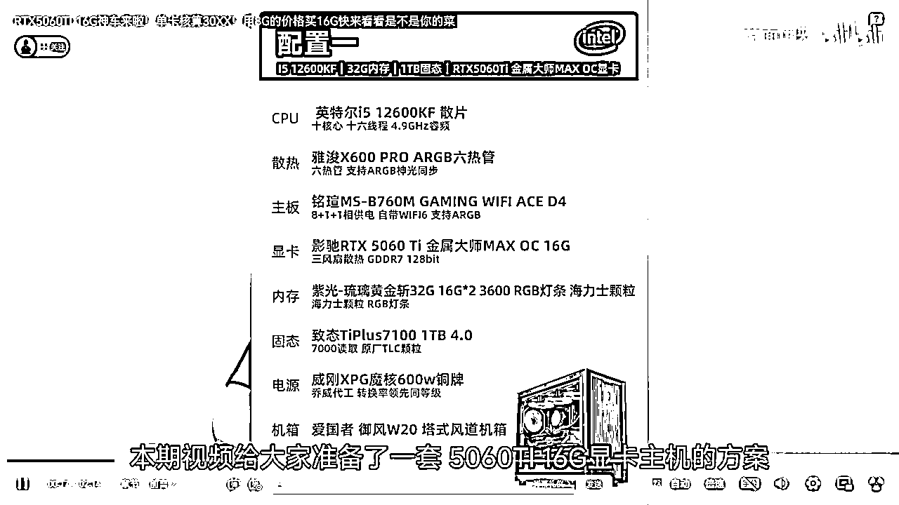

《B站好物新手破局指南》：3天出单，拆解5大变现风格帮你少走90%的弯路
来源：https://awev3u2sjb8.feishu.cn/docx/C8A5d0TD1odIANx4SyEcid3mnhc
大家好，我是AI德华。
在写下这篇文章时，我B站好物项目的已经赚钱了。
说实话，如果不是亲身经历，我可能也不信
一个用AI做的简单视频，真的能在B站赚到钱。
今天，我不想只分享喜悦，
更想把我如何赚到这第一笔钱的思考、工具和完整“路径，毫无保留地分享出来，
希望能给你带来真正的价值，
避免“踩坑”和给你增加行动的信心。
文章总览：
这篇文章主要介绍了在B站做好物推荐实现3天出单的经验，分享了多种变现风格及实操流程。核心内容如下：
- 效率派，如super好价君，以信息直给、高频发布获精准流量；
- 体验派，如斤斤计较的包子，通过实拍开箱打造真实体验；
- 偶像派，如爱唱歌的信，以主播个人魅力和专业性吸引粉丝。
- 选品思路：关注联盟后台爆款榜、导购平台高热度商品及对标账号推的产品，选大品牌、近期有好价格且销量增长快、卖点清晰、素材充足的商品。
- 脚本创作：利用万能Prompt模板让AI按要求生成带货短视频脚本，遵循痛点钩子等黄金结构，语言口语化且有数据支撑。
- 制作流程：从素材准备到封面制作，实现流水线化，1小时可产出多条视频，如用剪映生成配音、添加字幕与BGM等。
作者强调做B站好物
要先选对适合自己的风格，再积极行动，借助AI抓住红利机会。
赚到了第一块钱
看到亦仁发的B站好物超级标，我大概是圈里最坐不住的那批人之一。作为一个12年的B站老用户，从看番到追UP主，B站陪我走过了青春。
但“B站带货”？说实话，我心里是打问号的，真有那么神奇吗？
但生财的价值观就是“干就完了”。我没有“等靠要”，而是选择立刻验证。
于是在发布视频的第三天，我就出单了。
当我在后台看到收益的时候，心情真的非常震惊。
一个用AI做的、看起来这么简单的视频，真的会有人跟着买？这个正反馈瞬间打消了我所有的疑虑，也给了我极大的信心。
一、我的第一步：不是做视频，而是调研
（这里的调研，是用行动，而不是只是在想，在问）
下面这张表，是我花了好几天时间，把几十个账号一个个“扒”干净才总结出的核心，毫不夸张地说，它能帮你节省不少的研究时间。
这张表是我行动的“导航地图”，它帮我解决了几个核心问题：
- 内容怎么做？ （真人出镜？横评？还是纯数据+配音？）
通过这张表，我发现了很多“跑通了”的账号，并不需要真人出镜，甚至制作非常简单，核心就是把产品的核心卖点和优惠信息讲清楚。
二、核心干货：B站好物的5大主流风格与深度拆解
就像亦仁超级标写的那样，“如果你没啥思路，不妨从数码产品做切入”调研完榜单发现数码赛道确实是数量最多，低粉高变现最多，内容简单的赛道，因此我对数码的博主又进行了更深入的研究~
深入研究后，我发现B站好物——数码赛道主要有五种主流风格。成功的关键不是模仿，而是“风格匹配”——找到最适合自己能力、资源和性格的玩法。下面就是每个风格的对标账号拆解。
风格一：效率派（信息流模式）
- 怎么做账号： 无需真人出镜，账号定位是“信息发布工具”。核心是效率，可以高频发布，但为规避风险，建议一天不超过3条。
”、“抄作业！”、“XX机型降价了！”。
- 结构： 形式非常简单，通常是“商品截图+AI配音”。
内容逻辑是：这是什么产品 -> 原价多少 -> 现在用券后多少 -> 怎么买。信息直给，不绕弯子。
如“链接放评论区了，券不多，手慢无！”。
- 流量从哪里来： 几乎来自用户精准搜索产品型号或“XX推荐”等关键词，是纯粹的SEO玩法，能吸引有明确购买意图的流量。
- 怎么变现的： 纯粹的蓝链CPS佣金，商业模式简单清晰。
- 账号情况如何： 单个视频播放、点赞数据通常不高，但因为流量精准，转化率可能不错。最大风险是生命周期短，容易被平台判定为低质量营销内容而限流或封禁。
- 如果你来复刻： 这是最适合新手入门、验证流程的模式。
可以用最小成本跑通从选品、制作、发布、挂链到收款的全流程。但不适合作为长期事业来经营。
闲聊数码站 同步平台活动信息
风格二：技术派（PPT横评模式）
- 怎么做账号： 无需出镜，但内容需要结构化、信息量大。定位是“客观的选品顾问”。建议周更，保证单期内容的深度和价值。
- 钩子： 抛出用户常见的选择困难症，如“给大家盘点一下，游戏本热卖榜前十机型，看看大家都买哪些型号”，“8000左右价位，哪些游戏本比较值得入手”
- 结构： 典型的PPT形式。1. 提出问题（选购痛点） -> 2. 确定评测维度（如性能、外观、价格、续航） -> 3. 将几款竞品并列，在每个维度下进行横向对比 -> 4. 给出清晰的总结图表和购买建议。
- 转化： 引导语更专业、更客观，如“感觉大家的观看，希望能帮助大家挑选到合适的机型”。
- 流量从哪里来： 搜索+推荐。因为内容有价值、信息密度高，能解决用户的实际问题，平台会给予推荐流量，也能吃到长尾的搜索流量。
- 怎么变现的： 蓝链佣金为主，当有一定知名度后，开始有品牌合作的可能（例如在横评中进行付费植入）。
- 账号情况如何： 播放量和粉丝粘性远高于效率派。评论区常有高质量的技术讨论，用户质量高。
- 如果你来复刻： 这是最适合AI自动化和规模化生产的模式。脚本可以结构化，PPT可以模板化，配音可以用AI。是新人摆脱“搬运工”身份，转向“内容创作者”的绝佳跳板。
风格三：亲和派（真人出镜口播模式）
- 怎么做账号： 真人出镜，但制作可以相对简单。定位是“你身边懂行的朋友”。以个人形象为核心，快速建立信任感。
- 钩子： 用朋友聊天的口气提出问题，如“关注性价比主机的你不知道有没有发现”。
- 结构： 内容框架和PPT模式类似，但承载形式是“一个人+一堆资料截图”，由真人来讲解。相当于PPT模式的“真人升级版”，增加了表情、语气和互动感。
- 转化： 话术更口语化、更有人情味，“如果觉得本期视频对你有所帮助，直接链接汇放在评论区，给您推荐”。

- 流量从哪里来： 推荐流量占比会更高。人脸是最好的“品牌”，平台更愿意推荐有真实人设的视频，更容易获得粉丝的长期关注。
- 如果你来复刻： 核心是克服镜头恐惧。不需要复杂的布景和拍摄，一部手机、一个支架就能开工。它能帮你快速在众多AI号中脱颖而出。
风格四：体验派（实拍开箱模式）
- 怎么做账号： 视频+直播结合，打造真实的“产品体验官”IP。定位是“替粉丝花钱踩坑的实在人”。
- 钩子： 展示产品和价格，激发好奇心，如“我花XXX元买的XX，到底值不值？”。
- 结构： 1. 真实开箱（包装、配件、第一印象） -> 2. 上手把玩（质感、重量、设计细节） -> 3. 场景化体验（实际使用效果、性能跑分） -> 4. 深入点评优缺点（“计较”的精髓，不回避问题） -> 5. 给出最终的、场景化的购买建议。
- 转化： 基于强信任的转化，“如果觉得我的评测对你有帮助，可以从置顶评论的链接支持一下，感谢大家。”

- 流量从哪里来： 推荐流量为主，粉丝流量为辅，搜索流量为补充。这是最健康的流量模型。
- 怎么变现的： 蓝链佣金 + 高价值的品牌定制商单+私域服务
- 账号情况如何： 赛道内的头部账号，播放数据和带货GMV都非常可观。
- 如果你来复刻： 需要投入资金购买产品。核心能力不是成为技术专家，而是成为一个“认真的、挑剔的消费者”、
- 类似的账号 还有不寻常手机测评（手机）、电锯爷（电视）、雨哥椅子测评（椅子）等。
风格五：偶像派（KOL锐评模式）
- 怎么做账号： 以主播的个人魅力和专业性为核心。视频内容多为截图锐评输出，直播内容多为回答粉丝问题，定位是“说真话的意见领袖”。
- 钩子： 直播和视频中的金句、暴论、猛料，如“鸡哥这是疯了吗”、“XX直接杀死比赛”。
- 结构： 回答粉丝提问，提供一线信息，观点鲜明，一针见血。通过“私域有官方售后人员”这类信息，建立超强的信任背书。
- 转化： 基于粉丝对个人IP的极度信任，转化率极高。
- 流量从哪里来： 锐评话题带来讨论 + 粘性极强的直播间核心粉丝。
- 怎么变现的： 蓝链佣金 + 私域服务 + 直播打赏
- 如果你来复刻： 需要一定的行业积累、极强的个人魅力和口才。
三、我的制作内容工作流：从选品到发布的“AI流水线”
拆解清楚、选定风格后，就进入了最关键的执行环节。我选择了门槛最低的“效率派”模式作为起点+，并围绕它打造了一套几乎完全由AI驱动的、可批量复制的工作流。下面，我将毫无保留地拆解我的每一步。
第一步：选品思路（选什么，决定了80%的成败）
我的核心思路是“不创造需求，只迎合趋势”。我不自己判断什么会火，而是让市场数据告诉我答案。
- 数据来源：
- 联盟后台： 重点关注“淘宝联盟/京东联盟”APP里的官方“爆款榜”、“趋势榜”，这里的数据最真实，能看到什么产品正在被大量推广和购买。
- 导购平台： 每天花10分钟刷一下“什么值得买”这类导购网站，看高热度的商品是哪些，评论区讨论的是什么。
- 对标账号： 直接看B站上那些做得好的带货账号，他们最近在推什么，哪条视频爆了，就意味着这款产品有市场潜力。
- 我的筛选标准：
标准一：大品牌，市场认可度高 用户会主动搜索“小米”、“Anker”、“倍思”，但很少会搜一个白牌。大品牌自带流量和信任度，用户看到标题就愿意点进来，转化链路更短。我们做的就是“临门一脚”的提醒工作。
标准二：近期有好价格，销量有快速增长 这是我们做视频的“时效性”和“稀缺性”来源。
- 怎么判断？ 关注商品是否处于“大促期间”（如618、双11），或者是否有“限时大额神券”。
- 核心技巧： 在联盟后台，重点观察一款商品近7日或24小时的销量曲线。如果出现一条“陡峭的增长曲线”，通常就意味着好价格引爆了市场，此时入场做推广，成功率极高。
标准三：清晰的视频化卖点 大品牌的热销品，通常卖点都很清晰。这方便我们快速提炼，也方便AI生成脚本，更能让用户在几十秒内了解产品。
标准四：充足的官方素材 这是最后的生产可行性检查。在商品详情页，有大量高清的白底图、场景图、细节图。这是我们做视频的“弹药”，素材越多，视频画面就越丰富，制作起来也越轻松。
第二步：脚本/文案（AI是我的金牌文案）
过去，写文案是最头疼的事，但现在，我把它完全交给了AI。关键在于，你要给AI一个好的“Prompt”（指令）。
这是我用的一个万能Prompt模板，你可以直接复制使用：
# 角色
你是一位B站数码区的UP主，风格专业、客观，同时又通俗易懂。
# 任务
请你为下面的产品，撰写一个时长约50秒的带货短视频脚本。
# 要求
1. 脚本需要遵循“痛点钩子-产品展示-核心卖点-使用场景-价格优势-行动号召”的黄金结构。
2. 开头必须有强烈的钩子，能瞬间抓住用户注意力。
3. 语言风格要口语化、接地气，方便用于AI配音。
4. 在讲解核心卖点时，要用数据和对比来支撑，显得更专业。
5. 请直接输出可用于配音的口播文案，不要有多余的格式。
# 产品信息
【[在这里粘贴你从商品详情页复制的产品标题、核心卖点和参数]】
第三步：制作流程（流水线化，1小时产出N条视频）
有了选品和脚本，制作视频就成了一个“体力活”，
我的目标是把它流水线化。
- Step 1: 素材准备： 根据链接，录屏制作一个下单流程视频
- Step 2: AI配音生成： 把上一步优化好的脚本粘贴到剪映中进行配音，选择一个你喜欢的AI声音，先生成一条带AI配音和字幕的音频轨道。
- Step 3: 视频画面剪辑： 根据配音的节奏，直接把，录制好的下单流程一样铺在视频轨道上。
- 小技巧： 为了避免画面单调，可以使用“关键帧”功能，给静态图片增加一个缓慢放大或移动的动态效果，或者加一些“引导教学类的插图”，这样能极大提升视频的完播率。
- Step 4: 添加字幕与BGM： 使用剪映的“识别字幕”功能，选择一个醒目的字体样式（比如带描边的黑体）。再从素材库里找一首有节奏感的、免费的科技类BGM，把音量调低（大约15%），垫在配音底下，视频的“高级感”瞬间就上来了。
- Step 5: 封面制作： 打开「Canva可画」，选择“视频封面”模板。把最吸引人的产品图放上去，用最大、最醒目的字体加上视频的核心标题，比如“百元内最强充电宝？”或“产品名称+核心配置+低价”突出一个核心卖点，吸引用户点击。
整套流程下来，我实现了低成本、高效率的批量化内容产出。
这套AI流水线，极大地解放了我的生产力。
其实内容还是非常简单的，主要打的就是“淘客”逻辑，好价推送。
目前我也在跑“技术派”PPT横测内容方向，
既可以用Agent或工作流自动化工具，将“选品-脚本-制作”这个过程彻底无人化，通过矩阵放大，又可以通过SEO吃长尾流量。
如果你是这方面的技术大佬，或者对这个话题感兴趣，非常欢迎联系我，一起碰撞交流，让AI为我们创造更多可能。
四、我的实操经历：遇到的7个卡点与解决方案
上面分享的工作流看起来很顺畅，
但坦白说，在从0到1的每一步，我都遇到了不大不小的“卡点”。
我相信这些也是大部分新手会遇到的问题。在这里，我把我的“踩坑”过程毫无保留地分享出来，希望能让你少走一些弯路。
卡点一：打不破的“怀疑魔咒”——这事儿真的靠谱吗？
- 困难： 看到超级标后，我的第一反应和很多人一样：非常激动，但又有些怀疑。“这么菜的内容GMV能破千万？”
- 很多时候这种怀疑，是阻碍行动的最大敌人，但我不会，我会有很高的好奇心去研究它~
- 我的解决方案： 用“笨”办法，亲自验证。 我没有停留在猜测，而是把超级标截图里的账号，在B站上一个一个搜出来，点进他们的主页看。结果让我大跌眼镜，很多视频的制作水平确实不高，但后台的带货数据却是真的。这个瞬间，我的心态从“怀疑”变成了“兴奋”——“这内容不是有手就行？”，干就完了！
卡点二：拿不到的“入场券”——如何快速搞定1000粉？
（可刷粉、买号，互关等。——我测过）
- 困难： B站悬赏带货的硬性门槛是“粉丝数 > 1000”。
- 我的解决方案： 目标导向，不择手段。 我的核心目标是“快速验证项目可行性”，而不是“成为一个慢慢成长的UP主”。
- 做过电商的圈友都懂，解决方式无非几种：自然涨粉、互关、shua等多种方式。为了效率最大化，我选择了后者。
- 信息差就是这样，你不敢想、不敢问，它就永远是你的障碍。
很多新手卡在这一步，其实就是思维没打开，通过信息搜索能力去找呗！如果你懒得找，我也可以给你推下（找鱼丸对接）
搜索的截图
卡点三：迷失的“内容定位”——到底做什么样的视频？
- 困难： 账号有了，但做什么内容？做横评？做开箱？还是做口播？每种看起来都有人在做，但也都有门槛。
从榜单从上向下一个个列表拆解，然后专挑“低分高变现”。
- 但带货数据却很好”的账号。我发现，这类账号的内容模型出奇的一致：手机录屏+AI配音+AI字幕。
- 这个发现让我如获至宝，因为这意味着内容可以被“工作流化”，可以被AI大规模生产。
于是，我毫不犹豫地选择了这个模式，在数码赛道快速切入。


卡点四：复杂的“选品难题”——我该带什么货？
- 在项目初期，最快的选品方式就是“抄”。我直接点开同行的带货视频，看他带什么，我就带什么。
卡点五：繁琐的“视频制作”——该如何制作视频
- 困难： 很多时候拍视频对于小白来说都是很繁琐麻烦的
- 直接用手机打开上一步选好的商品链接，模拟一遍用户从浏览到下单的流程，全程录屏。然后把这段录屏素材，扔进我上一章节提到的“AI自动化流水线”里去跑，一条视频很快就生成了。
卡点六：尴尬的“点击率”——为什么封面和标题没人点？
- 困难： 视频发出去了，但曝光量和播放量都是尴尬的个位数。
在B站，流量破层的第一步就是“曝光-进入率”，
也就是封面和标题的吸引力。——封标是播放量
- 封面： 直接截取对标账号里点击率高的封面，把图片保存下来，然后用Canva“抠图”，改一改文字，就成了我的封面。
- 标题： 同样是直接拿对标的爆款标题，用AI或手动的方式，改写同义词、调整语序，避免被平台判定重复。
卡点七：惨淡的“发布流量”——为什么批量发了还是没人看？
- 困难： 我以为大力出奇迹，一天发了十几条，结果流量反而更差了，甚至被限流。
- 我的解决方案： 降低频率，拉开间隔，或者矩阵放大。 我发现，用同一种模式高频发布，很容易触发平台的“反作弊机制”。于是我调整了策略：每条视频之间至少间隔1小时以上。
五、最重要的感悟：行动大于一切
当然，过程也不是一帆风顺。
刚开始，我也为怎么搞定千粉号、怎么开通带货权限、怎么绑定PID这些琐事头疼。也曾因为视频发出去没流量而焦虑，
我的方法：大力出奇迹。
遇到问题，就去B站、知乎、生财各渠道搜，把信息差一点点抹平。
流量问题，就靠批量发布去测试，总有一款能跑出来。
如果要我总结最重要的一个经验，那它分为两步：
第一步：先谋后动，选对风格。
在你埋头做视频前，请一定花点时间，看懂我上面拆解的5种模式。
诚实地问问自己：你的性格、能力、资源，最适合哪条路？
是做高效的AI信息流，
还是做深度的PPT横评？是做亲和的真人出镜，还是做硬核的实物开箱？
想清楚这个问题，远比学一个剪辑技巧重要一百倍。
第二步，大家熟知的“先完成再完美”。
一旦选定最适合你的风格，就不要再犹豫，立刻行动。
不要怕视频粗糙，不要怕数据难看。
在正确的道路上，拿到第一个正反馈，无论是播放量破千，还是像我一样赚到第一块钱，都会给你带来无与伦比的信心，支撑你走得更远。
这个项目，
我认为是一个普通人借助AI，低成本验证商业闭环的绝佳机会。
欢迎对B站好物感兴趣的或者已经在跑的一起交流，抓住这波红利！